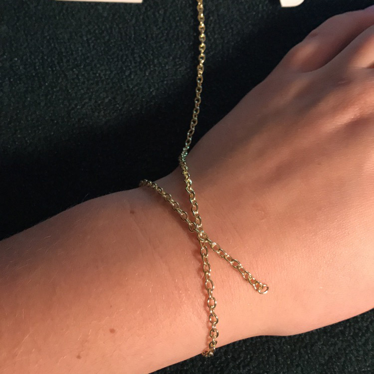
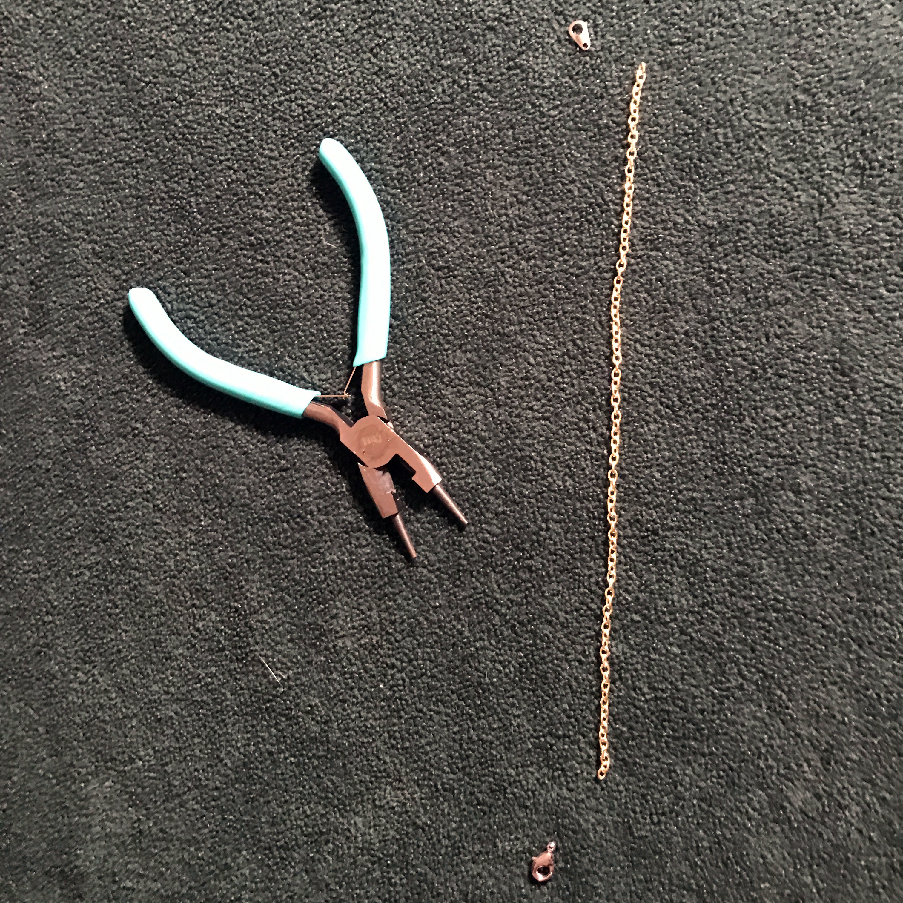
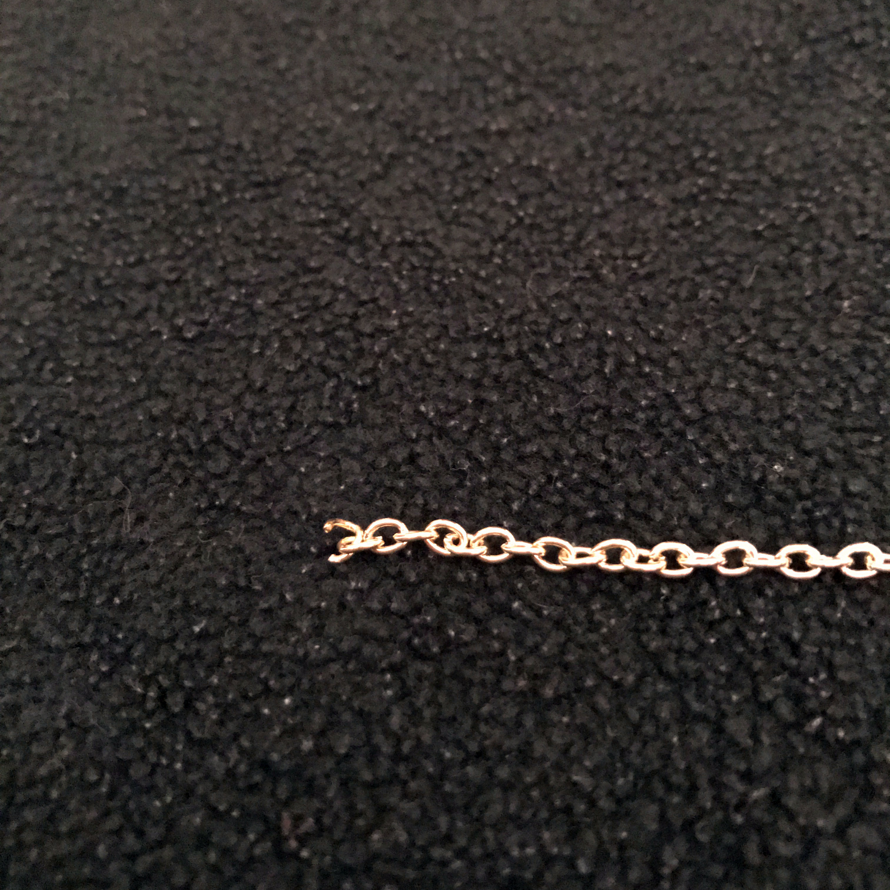
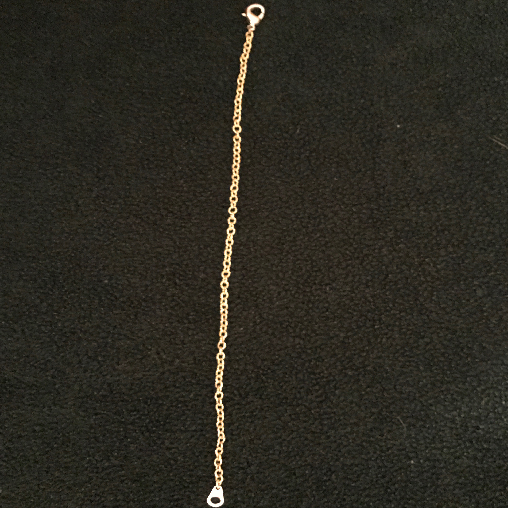
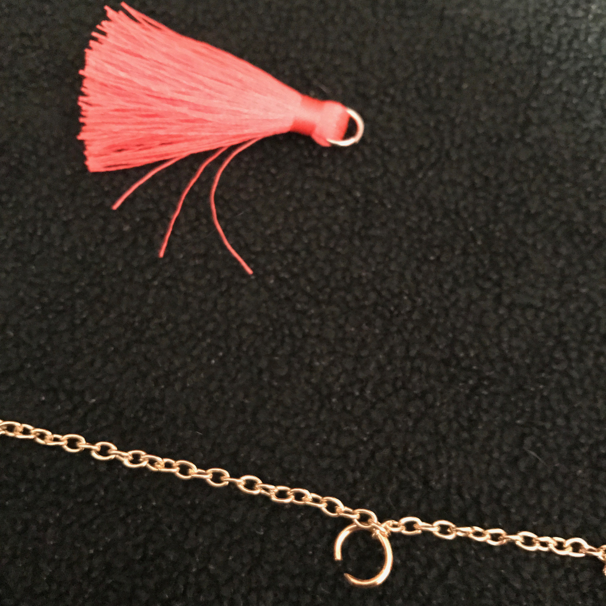

Bracelet
September 15th, 2017
How to Design a Uncomplicated Bracelet
I believe simple accent bracelets come together perfectly with an outfit. I personally dont like hugr bracelets, they distract me more then anything. Instead of paying for a cute simple twenty dollar bracelets, why not just make one. Its super easy plus you can decide exactly how and what you want to be on it.
Materials
Gold Chain
Clasp
Accent Piece
Scissors/Plyers
Clamps
Step By Step
1. Measure the length of your wrist and cut the chain very close to size only leaving a little room left over.
2. Now we can attached the clasp on either end. Open up the ends of both the chains and place the clasp in. Then close it shut with the plyers
 3. A chain with clasps should be what is left. Very Basic.
4. Now take what the desired beads or pendant is and use the same method as attaching the clasp for the accent pieces. Open the Chain section and slide on the small piece. Then close it with the plyers.
5. Once you feel you are content with your bracelet then you are all done.
Tips
The one suggestion I have for bracelets with chains is to make sure you buy a chain that your tweezers can fit into on each loop. The chain I choose was very small so I added an externsion circle to the tassles because they were diffcult to weave through.